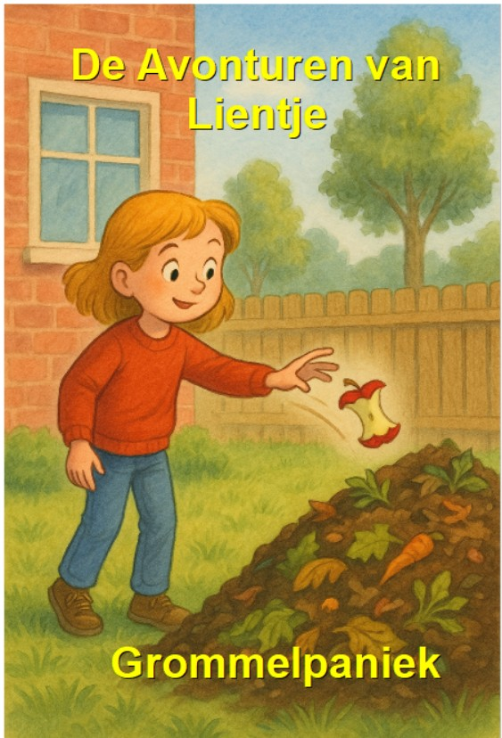

Waarover gaat het?
Wanneer Lientje een klokhuis op de composthoop gooit, ontdekt ze een verborgen wereld onder haar voeten.
Wat ontdekt ze?
- compost leeft
- wormen en bacteriën werken samen
- lucht en evenwicht zijn belangrijk
- verkeerde rommel maakt alles ziek
Wie is Grommel?
Een afvalmonster dat groeit van verkeerde spullen in de compost, zoals plastic, batterijen en nep-karton.
Waarom is dit boekje bijzonder?
Het legt composteren eenvoudig uit via avontuur, humor en fantasie, voor kinderen én volwassenen.